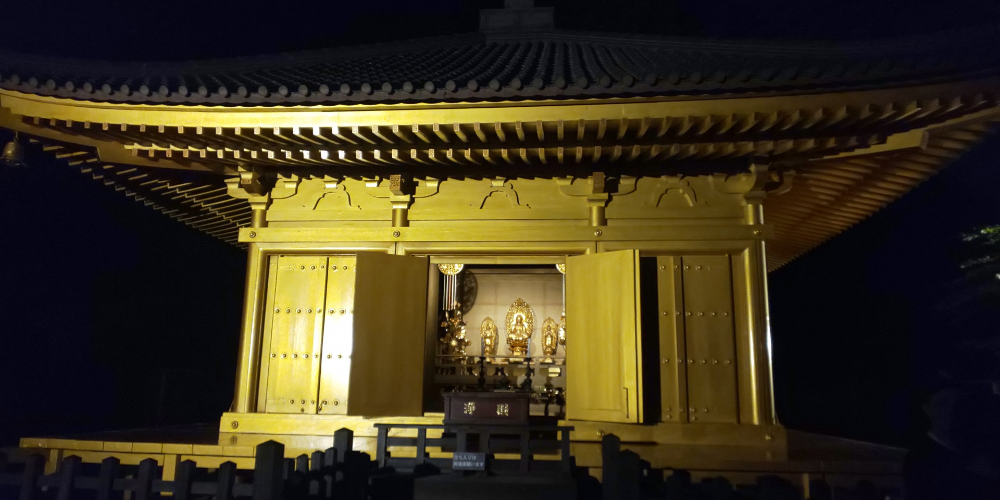
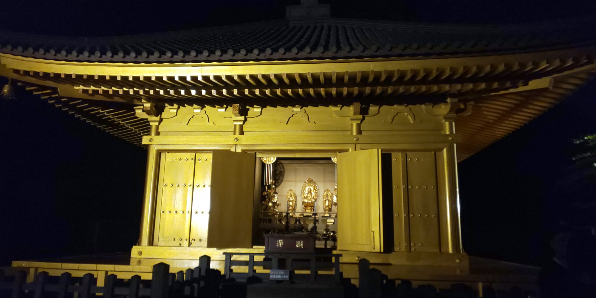

この教材の目的
1.日本の歴史・文化財への理解を深めるため
実際に手を動かして金色堂を再現することで、構造や装飾の特徴を具体的に理解でき、歴史的価値をより実感しやすくなります。
2.仏教文化や奥州藤原氏の世界観を体感的に学ぶため
金色堂がどのような願いのもとに建てられたかを知り、その思想を空間的に理解します。
3.創造的な学び・協働的な学びを促すため
設計、配置、調整など、試行錯誤しながら建物を再現する作業を通して、主体的・協働的に課題に取り組む姿勢を育てます。
4.ICT活用能力を育てるため
マインクラフトを教材として使うことで、デジタル環境での表現力や空間把握能力を伸ばし、情報活用能力の育成につなげます。
 

金色堂とは
中尊寺金色堂は、1124年に奥州藤原氏の藤原清衡（ふじわらのきよひら）によって建てられた仏堂です。堂の内外が金箔でおおわれ、光り輝くような姿をしていることから「金色堂」と呼ばれています。堂の中には阿弥陀如来を中心とした仏像が並び、柱や扉には螺鈿（らでん）や蒔絵（まきえ）などの豪華な装飾がほどこされています。これらは、仏さまの世界である「極楽浄土」を現実の建物で表すために作られたものです。 また、金色堂は仏を祀る場所であると同時に、藤原氏三代の棺が納められた霊堂でもあります。中央には清衡、周囲には基衡（もとひら）と秀衡（ひでひら）の棺が安置され、藤原氏の歴史と祈りが詰まった特別な建物となっています。現在も建造当時の姿がよく残り、2011年には世界遺産に登録されました。
歴史
金色堂が建てられた背景には、藤原清衡自身の深いつらい経験があります。東北地方では11世紀に「前九年の役」「後三年の役」という大きな戦いが続き、多くの人々が命を失いました。清衡も幼いころに戦いに巻き込まれ、父を失い、母が敵方に再嫁したため仲間として扱われなかったなど、複雑で苦しい人生を送りました。 その後、戦乱が終わって平泉を治める立場になった清衡は、「二度とこの土地で争いを起こしたくない」という強い願いを持ちました。彼は戦いで亡くなったすべての人々を供養し、平和な世の中を祈るための象徴として金色堂を建てました。 当時の平泉は、金や馬、交易などで豊かになっており、京都に負けない文化が発展していました。金色堂の豪華な装飾が可能だったのは、この地域の豊かさと、清衡の平和への強い思いがあったからこそです。 このように金色堂は、ただ豪華な建物というだけでなく、戦乱の時代を生きた人々の「平和を願う心」が形になった歴史的な建造物なのです。
マインクラフト再現手順
マイクラで再現するための手順
1.金色堂の建てられた経緯を知ってもらいます。
2.建物の構造(寝殿造)を大まかに理解してもらいます。
3.自由建築などを通して建築力を高めてもらいます。